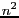

| [ < ] | [ > ] | [ << ] | [ Up ] | [ >> ] | [Top] | [Contents] | [Index] | [ ? ] |
| [ < ] | [ > ] | [ << ] | [ Up ] | [ >> ] | [Top] | [Contents] | [Index] | [ ? ] |
The aim of the binary IO is to provide a consistent mechanism for saving and restoring all VXL objects to streams/files, in a cross platform manner.
| [ < ] | [ > ] | [ << ] | [ Up ] | [ >> ] | [Top] | [Contents] | [Index] | [ ? ] |
The original intention was that ALL classes with data should implement
b_write(os) and b_read(is) as member functions, and that
the external vsl_b_write(os,object); would be implemented using
the member function. The advantages of this scheme are that
Unfortunately a problem arises with templated containers, such as vbl_array_2d<T>.
Creating a container of type T requires that vsl_b_write(os,T) is implemented,
otherwise the b_write for the array will not compile. This means that
adding such code to the library would break existing code, and force un-necessary
implementation of reading/writing functions (even when creating arrays of
objects which are unlikely ever to be saved, such as GUI Widgets).
A related problem is that to keep the core libraries independent, one would have to duplicate the basic binary IO of built in types in every library. When templating over a class outside the library, one might have to write a specialisation of the IO functions to get them to compile.
The simplest solution is to write the code as `clip-on' libraries, as has been done.
However, for level-2 libraries, in general, neither of these problems will arise. In this case it is strongly recommended by the authors that IO be built into the class.
It is interesting to note that after vsl was written, and entirely independently as far as these authors are aware, a section on IO was added to the comp.lang.c++ FAQ. The recommendations in the FAQ match the design of vsl very closely, in the design of binary formats, the serialisation scheme, and the base-class loader scheme.
| [ < ] | [ > ] | [ << ] | [ Up ] | [ >> ] | [Top] | [Contents] | [Index] | [ ? ] |
All values are stored in little endian format (as used by Intel and DEC alpha processors.) We had to choose one, and we mostly use Intel platforms.
| [ < ] | [ > ] | [ << ] | [ Up ] | [ >> ] | [Top] | [Contents] | [Index] | [ ? ] |
The original code from which vsl was derived was cross platform only in the sense
that it worked on either big-endian 32-bit platforms or little-endian 32-bit platforms.
This was not an unreasonable assumption at the time it was written. However during the
requirements capture for vsl, it became clear that being able to handle 64-bit
fundamental types would be necessary. For example the long on an alpha-64 is 64 bits.
It is fundamentally impracticable to deal quietly and correctly with the problems this causes. In particular, a number greater than 4G can be represent by a 64-bit long. It can be successfully saved, but a platform with a 32-bit long simply cannot represent the value. Nevertheless it is necessary to deal with the problems in a predictable manner. There were several options.
The first option has the advantage of being the simplest (on the platform which matches the sizes chosen.) It has the disadvantage of either being twice as large as required on some platforms, and not able to represent the full range of values on others.
The second option, has the advantages of doing the correct thing on all platforms, and being very efficient when files are loaded and saved on the same platform. This is especially true if the endian-ness was also flagged in the header and values saved in native format. The disadvantage is that the code for reading files on each platform must know about every other possibility. So if there are platforms supported, the numbers of options that need to be programmed is  .
The third option, suggested by Peter Vanroose, has the advantage that it does the correct thing on all platforms. Also, there is only one format, and so the amount of code to write only grows linearly with the number of platforms rather than quadratically as in option 2. The final advantage is that the store file will likely be smaller, since numbers are represented in as few bytes as possible. It has the disadvantage of some extra computation and memory overhead when both reading and writing.
The performance of the encoding and decoding required for option 3 was measured. On an Intel Pentium 3, using MSVC 6.0 in full optimisation mode, 25 million integers were encoded or decoded at once. The results do not include memory allocation overhead but does include some OS overhead.
Type Range of values Range of encoded size Encoding time Decoding time
/ bytes /clock cycles /clock cycles
unsigned 0 -> 127 1 18 24
int -64 -> 63 1 19 28
unsigned 0 -> 4G 1,2,3,4,but mostly 5 37 95
int -2G -> 2G 1,2,3,4,but mostly 5 47 105
|
This means that a 850 MHz PC can encode about 50 million small valued integers per second, and decode about 35 million. The decoding takes longer due to the need for testing for integer overflow.
We consider these speeds to be fast enough. and so option 3 was chosen.
The arbitrary length format stores the number in a series of bytes. Of each byte, 7 bits are used to represent the number and the most significant bit is used to flag the end of the number. The flag bit is 0 if there are more bytes left for this integer, and 1 if this is the last byte. The bytes are stored in little endian order, and the signed numbers are stored using 2s complement notation.
A consequence of this choice is that for example a number can be written from a short, and read into a long. We strongly advise against doing this, as it relies on the implementation details.
| [ < ] | [ > ] | [ << ] | [ Up ] | [ >> ] | [Top] | [Contents] | [Index] | [ ? ] |
Since almost all platforms use IEEE format floating point types to represent floats and doubles, we have used this format (in little endian order) to save them to disk.
A downside of this decision is that it is unclear how to store long doubles. The 80bit format that is native to Intel platforms would not appear to be sufficiently general. The best alternative would be to switch to variable length encoded floating point values. It might be easier just to design a 128 bit format. Until then I/O of long doubles is not supported. Please contact the designers if you need to add it.
| [ < ] | [ > ] | [ << ] | [ Up ] | [ >> ] | [Top] | [Contents] | [Index] | [ ? ] |
The vsl system stores a IO schema version number at the start of the stream. This will enable
a clean backwards compatible upgrade of the IO schema. It will not however make the rewrite of
vsl trivial. Contact the designers if you wish to change the schema.
| [ < ] | [ > ] | [ << ] | [ Up ] | [ >> ] | [Top] | [Contents] | [Index] | [ ? ] |
If you use Unix, the following can be inserted in your /etc/magic file so that the file command
will recognise vsl files.
#------------------------------------------------------------------------------ # VXL: file(1) magic for VXL binary IO data files # # from Ian Scott <scottim@sf.net> # # VXL is a collection of C++ libraries for Computer Vision. # See the vsl chapter in the VXL Book for more info # http://www.isbe.man.ac.uk/public_vxl_doc/books/vxl/book.html # http:/vxl.sf.net 2 lelong 0x472b2c4e VXL binary file, >0 leshort >0 schema version no %d |
| [ < ] | [ > ] | [ << ] | [ Up ] | [ >> ] | [Top] | [Contents] | [Index] | [ ? ] |
A common approach to performing serialisation, is to store the serial number in the shared object itself. This is the approach used by the Microsoft Foundation Classes, and by DEX (the IUE's IO and serialisation scheme.)
There are two disadvantages to this. The first is that you have to modify the object being serialised.
The second is that this scheme can get confused if a set of objects is being written to two streams. When do you clear the already saved flag for each object? What happens if the output to the two streams is being interleaved? Will a shared object get saved to one stream and not the other?
A different approach is used by vsl. Here the serialisation record is kept by the stream object.
Pointers are used to uniquely identify each shared object within each computer, and a serial number
is generated to be saved on the stream. Since there is now a record for each pair
(stream, shared object) there will not be any clashes when saving to multiple streams. It also
avoids having to modify the shared object.
| [ < ] | [ > ] | [ << ] | [ Up ] | [ >> ] | [Top] | [Contents] | [Index] | [ ? ] |
When using polymorphism, there are frequently times when one needs to
save and restore an object just using a base class pointer to it.
vsl provides facilities to do this.
There are two cases to consider
The former is the preferred method.
The latter is provided to allow binary IO for third-party libraries which cannot be modified. However, for technical reasons (see design notes below) it is also used to provide binary IO for the polymorphic hierarchies in the VXL core libraries.
| [ < ] | [ > ] | [ << ] | [ Up ] | [ >> ] | [Top] | [Contents] | [Index] | [ ? ] |
#include <vsl/vsl_binary_loader.h>
class vxl_my_class : public vxl_baseclass
{
// ...
virtual void b_write(vsl_b_ostream&) const;
virtual void b_read(vsl_b_ostream&);
virtual vcl_string is_a() const;
virtual bool is_class(vcl_string const&) const;
virtual vxl_baseclass* clone() const;
};
//: Provide examples of each type of polymorphic object that might appear in the stream.
void vxl_configure_loaders()
{
vsl_add_to_binary_loader(vxl_my_class());
}
void demonstrate_save(vsl_b_ostream& os)
{
vxl_baseclass *base_ptr = new vxl_my_class;
// Write the object to the stream, together with
// an identifier indicating what type it is.
vsl_b_write(os,base_ptr);
// Tidy up
delete base_ptr;
}
void demonstrate_load(vsl_b_istream& is)
{
vxl_baseclass *base_ptr;
vsl_b_read(is,base_ptr);
// Show the object
vcl_cout<<"Loaded object: "<<base_ptr<<vcl_endl;
// Tidy up
delete base_ptr;
}
|
| [ < ] | [ > ] | [ << ] | [ Up ] | [ >> ] | [Top] | [Contents] | [Index] | [ ? ] |
When an object is saved by baseclass pointer, using vsl_b_write(os,baseclass const*),
the name of the class is written first, then the object itself.
When one comes to load the object, using vsl_b_read(is,baseclass* &), the following
occurs:
vsl_binary_loader<baseclass>) is invoked.
vsl_add_to_loader(derived_class()).
So you now have a shiny pointer to the object. Note: The caller is then responsible for the object that the loader created.
The above methods also work if the pointer that was saved was NULL. The loader will detect this and set the baseclass pointer to zero.
| [ < ] | [ > ] | [ << ] | [ Up ] | [ >> ] | [Top] | [Contents] | [Index] | [ ? ] |
class vxl_my_class : public vxl_baseclass
{
// ...
// No IO here
};
//: Provide IO for vxl_my_class
class vxl_my_class : public vxl_baseclassIO
{
public:
//: Constructor
vxl_my_classIO();
//: Destructor
virtual ~vxl_my_classIO();
//: Create new object of type vxl_my_class on heap
virtual vxl_baseclass* new_object() const;
//: Write derived class to os using baseclass reference
virtual void b_write_by_base(vsl_b_ostream& os, vxl_baseclass const& base) const;
//: Write derived class to os using baseclass reference
virtual void b_read_by_base(vsl_b_istream& is, vxl_baseclass& base) const;
//: Copy this object onto the heap and return a pointer
virtual vxl_baseclassIO* clone() const;
//: Return name of class for which this object provides IO
virtual vcl_string target_classname() const;
//: Return true if \a b is of class target_classname()
// Typically this will just be "return b.is_class(target_classname())"
// However, third party libraries may use a different system
virtual bool is_io_for(vxl_baseclass const& b) const;
};
//: Provide IO class for each type of polymorphic object that might appear in the stream.
void vxl_configure_loaders()
{
vsl_add_to_binary_loader(vxl_my_class_io());
}
// The actual IO calls are then identical to those described above for the
// case of the IO provided within the class
|
See below for details of the implementation of the clip-on IO libraries.
| [ < ] | [ > ] | [ << ] | [ Up ] | [ >> ] | [Top] | [Contents] | [Index] | [ ? ] |
Essentially this is similar to the within-class-IO case, in that a string is written to the stream to indicate which class is saved, and when reading the stream this is used to indicate what to generate on the heap. However, the details of the implementation are more complicated.
When an object is saved by baseclass pointer, using vsl_b_write(os,baseclass const*),
a function in vsl_clipon_binary_loader<baseclass,baseclass_io> is invoked.
It contains a list of IO objects, each of which is queried
(using the io.is_io_for(baseclass const&) function to see if it can deal with the
given class. If so a name, io.target_classname(), is saved to the stream, then the
IO object is used to save the target object.
When one comes to load the object, using vsl_b_read(is,baseclass* &), the following
occurs:
vsl_clipon_binary_loader<baseclass,baseclass_io>) is invoked.
vsl_add_to_loader(derived_class()).
So you now have a shiny pointer to the object. Note: The caller is then responsible for the object that the loader created.
The above methods also work if the pointer that was saved was NULL. The loader will detect this and set the baseclass pointer to zero.
| [ < ] | [ > ] | [ << ] | [ Up ] | [ >> ] | [Top] | [Contents] | [Index] | [ ? ] |
std::abort(). Since
IO code is error prone for reasons often beyond the control of the programmer, this behaviour should be
replaced with a standard error message a setting of the stream's fail flag, and return.
long double and add it to vsl_binary_io.h.
| [ < ] | [ > ] | [ << ] | [ Up ] | [ >> ] | [Top] | [Contents] | [Index] | [ ? ] |
Your principle designers for this chapter have been Tim Cootes and Ian Scott. We based the first draft on the design of the Binary IO system in RADIAL, which was originally designed in Manchester by Dave Bailes and Dave Cooper.
Finally, the hard work of programming vsl and the vxl/io libraries was performed by the
C++ user's group at the Dept. of Imaging Science, University of Manchester;
Danny Allen, Tim Cootes, Nick Costen,
Ian Scott, Christine Beeston, David Cristinacce, Franck Bettinger, Louise Butcher, and
John Kang.
| [ < ] | [ > ] | [ << ] | [ Up ] | [ >> ] | [Top] | [Contents] | [Index] | [ ? ] |
The golden rule for trouble free binary IO is
Always write the input and output code in tandem - the output should precisely mirror the input.
First you need to evaluate whether the class needs binary I/O.
For example, the vnl_matrix_ref can just be left to inherit from
vnl_matrix because it does not have any additional member
variables.
Often iterators tend to be transient things which should not be
saved.
Where one does wish to save state, there are four cases to consider:
The last must be considered because various classes in vxl are derived from plain classes. The base classes in these cases are kept as plain classes to improve memory efficiency.
| [ < ] | [ > ] | [ << ] | [ Up ] | [ >> ] | [Top] | [Contents] | [Index] | [ ? ] |
For plain classes (those with no virtual functions), and those derived from plain classes, you need to add the following functions to the class definition in the .h file.
//: Binary save self to stream. void b_write(vsl_b_ostream& os) const; //: Binary load self from stream. void b_read(vsl_b_istream& is); //: Return IO version number; short version() const; //: Print an ascii summary to the stream void print_summary(vcl_ostream& os) const; //: Return a platform independent string identifying the class vcl_string is_a() const; //: Return true if the argument matches the string identifying the class or any parent class bool is_class(vcl_string const&) const; |
You will also need to add the following global scope helper function declarations to the .h file
//: Binary save vnl_my_class to stream. void vsl_b_write(vsl_b_ostream& os, vnl_my_class const& b); //: Binary load vnl_my_class from stream. void vsl_b_read(vsl_b_istream& is, vnl_my_class& b); |
NOTE: YOU SHOULD ALSO ADD APPROPRIATE TEST PROGRAMS : See below
| [ < ] | [ > ] | [ << ] | [ Up ] | [ >> ] | [Top] | [Contents] | [Index] | [ ? ] |
For base classes (those classes at the base of a polymorphic hierarchy, with virtual functions), you need to add the following functions to the class definition in the .h file.
//: Binary save self to stream. virtual void b_write(vsl_b_ostream& os) const; //: Binary load self from stream. virtual void b_read(vsl_b_istream& is); //: Return IO version number; short version() const; //: Print an ascii summary to the stream virtual void print_summary(vcl_ostream& os) const; //: Return a platform independent string identifying the class virtual vcl_string is_a() const=0; //: Return true if the argument matches the string identifying the class virtual bool is_class(vcl_string const&) const; //: Create a copy of the object on the heap. // The caller is responsible for deletion virtual vanyl_my_base_class* clone() const=0; |
You will also need to add the following global scope helper function declarations to the .h file
//: Binary save vnl_my_class to stream. void vsl_b_write(vsl_b_ostream& os, vnl_my_class const& b); //: Binary load vnl_my_class from stream. void vsl_b_read(vsl_b_istream& is, vnl_my_class& b); //: Allows derived class to be loaded by base-class pointer // A loader object exists which is invoked by calls // of the form "vsl_b_read(os,base_ptr)". This loads derived class // objects from the disk, places them on the heap and // returns a base class pointer. // In order to work the loader object requires // an instance of each derived class that might be // found. This function gives the model class to // the appropriate loader. void vsl_add_to_binary_loader(vanyl_my_base_class const& b); //: Stream output operator for class pointer void vsl_print_summary(vcl_ostream& os, vanyl_my_base_class const* b); |
NOTE: YOU SHOULD ALSO ADD APPROPRIATE TEST PROGRAMS : See below
| [ < ] | [ > ] | [ << ] | [ Up ] | [ >> ] | [Top] | [Contents] | [Index] | [ ? ] |
For derived classes in a polymorphic hierarchy, which include virtual functions, you need to add the following functions to the class definition in the .h file.
//: Binary save self to stream. virtual void b_write(vsl_b_ostream& os) const; //: Binary load self from stream. virtual void b_read(vsl_b_istream& is); //: Return IO version number; short version() const; //: Print an ascii summary to the stream virtual void print_summary(vcl_ostream& os) const; //: Return a platform independent string identifying the class virtual vcl_string is_a() const; //: Return true if the argument matches the string identifying the class or any parent class bool is_class(vcl_string const&) const; //: Create a copy of the object on the heap. // The caller is responsible for deletion virtual vanyl_my_base_class* clone() const; |
In this case you should not need any global helper functions, as they are included in the base class.
NOTE: YOU SHOULD ALSO ADD APPROPRIATE TEST PROGRAMS : See below
| [ < ] | [ > ] | [ << ] | [ Up ] | [ >> ] | [Top] | [Contents] | [Index] | [ ? ] |
The following is a template for the standard code for the implementation of each of the methods and functions declared above.
| [ < ] | [ > ] | [ << ] | [ Up ] | [ >> ] | [Top] | [Contents] | [Index] | [ ? ] |
This identifies the I/O version numbering. It needs to be incremented when the class's binary I/O changes.
There is no reason why this version number can't be
used for other purposes. So long as the b_read() method is updated to deal with it.
It is common and perfectly acceptable to modify a classes I/O during very early development without changing the version number.
//: Return IO version number
short vanyl_my_class::version() const
{
return 1;
}
|
| [ < ] | [ > ] | [ << ] | [ Up ] | [ >> ] | [Top] | [Contents] | [Index] | [ ? ] |
Classes should first save their version number. Derived classes should then
call the base class b_write(), if the base class has any data members.
Finally write the classes data members.
If data is duplicated within the class, (e.g. some workspace data) you will have to decide whether to save and reload the data, or else not save it and regenerate it on loading.
The standard form for the method is
//: Binary save self to stream.
void vanyl_my_class::b_write(vsl_b_ostream& os) const
{
vsl_b_write(os, version());
vanyl_my_base_class::b_write(os); // vanyl_my_base_class is parent of vanyl_my_class
vsl_b_write(os, this->my_value);
...
}
|
| [ < ] | [ > ] | [ << ] | [ Up ] | [ >> ] | [Top] | [Contents] | [Index] | [ ? ] |
This function is less complicated than it looks. The complexity of the switch statement is there solely to give as much backwards compatibility as you are willing to program.
//=======================================
//: Binary load self from stream.
void vanyl_my_class::b_read(vsl_b_istream& is)
{
if (!is) return;
short ver;
vsl_b_read(is, ver);
switch (ver)
{
case 1:
vanyl_my_base_class::b_read(is); // vanyl_my_base_class is parent of vanyl_my_class
vsl_b_read(is, this->my_value);
...
break;
default:
vcl_cerr << "I/O ERROR: vanyl_my_class::b_read(vsl_b_istream&)\n"
<< " Unknown version number "<< ver << '\n';
is.is().clear(vcl_ios::badbit); // Set an unrecoverable IO error on stream
return;
}
}
|
| [ < ] | [ > ] | [ << ] | [ Up ] | [ >> ] | [Top] | [Contents] | [Index] | [ ? ] |
Classes should print a short summary of their contents. Devolve printing of complex members and parent classes to that class, only if it is sensible.
Do not give too much information. For instance if your class is a container print the number of elements , and then no more than perhaps the first 5 elements, with ellipsis to indicate if there are more.
To aid clear printing the following rule has been found to be helpful.
If a summary can be printed on a single line, then do not output a linefeed. If a summary contains linefeeds in the middle, then finish the summary with a linefeed.
This approach gives flexibility in the output format whilst preserving readability and predictability for programmers.
The standard form for the method is
//: Output a human readable summary to the stream
void vanyl_my_class::print_summary(vcl_ostream& os) const
{
os<<"Important Value: "<<this->my_value<<" .. ";
...
// optionally os << vcl_endl;
}
|
| [ < ] | [ > ] | [ << ] | [ Up ] | [ >> ] | [Top] | [Contents] | [Index] | [ ? ] |
Unfortunately neither the type_info class nor the type_info::name field given
by RTTI are platform independent. To allow loading of a class by base class
pointer, the is_a()
method is used to identify exactly which
object to create. It can also be used for other purposes.
If the class is not part of an inheritance hierarchy or will not ever be loaded by base class
pointer, the is_a() method is not necessary and can be left out.
//: Return a platform independent string identifying the class
vcl_string vanyl_my_class::is_a() const
{
return vcl_string("vanyl_my_class");
}
|
The is_class() methods are not used by the vsl system, but are useful when
you don't have RTTI.
//: Return true if the argument matches the string identifying the class or any parent class
bool vanyl_my_class::is_class(vcl_string const& s) const
{
return s==vanyl_my_class::is_class || vanyl_parent_class::is_class(s);
}
|
| [ < ] | [ > ] | [ << ] | [ Up ] | [ >> ] | [Top] | [Contents] | [Index] | [ ? ] |
The base class loader scheme needs to be able to create a new object on the heap
from a base_class pointer to an old one. If the class is not part of an inheritance
hierarchy or will not ever be loaded by base class
pointer, the clone() method is not necessary and can be left out.
The code below assumes that either a working copy constructor has been defined, or else that compiler generated default copy constructor is suitable (e.g. the class has no pointer or reference member variables.)
//: Create a copy of the object on the heap.
// The caller is responsible for deletion
vanyl_my_base_class* vanyl_my_class::clone() const
{
return new vanyl_my_class(*this);
}
|
| [ < ] | [ > ] | [ << ] | [ Up ] | [ >> ] | [Top] | [Contents] | [Index] | [ ? ] |
//: Binary save vnl_vector to stream.
void vsl_b_write(vsl_b_ostream& os, vanyl_my_class const& v)
{
v.b_write(os);
}
//: Binary load vnl_vector from stream.
void vsl_b_read(vsl_b_istream& is, vanyl_my_class& v)
{
v.b_read(is);
}
|
It is acceptable to inline the previous two functions, in which case a half-decent compiler will optimise them completely away.
//: Output a human readable summary to the stream
void vsl_print_summary(vcl_ostream& os, vanyl_my_class const& v)
{
os << v.is_a() << ": ";
vsl_indent_inc(os);
v.print_summary(os);
vsl_indent_dec(os);
}
|
| [ < ] | [ > ] | [ << ] | [ Up ] | [ >> ] | [Top] | [Contents] | [Index] | [ ? ] |
The implementation code for functions to be added to base classes is as follows
//==============================================
//: Allows derived class to be loaded by base-class pointer.
// A loader object exists which is invoked by calls
// of the form "vsl_b_read(os,base_ptr);". This loads derived class
// objects from the stream, places them on the heap and
// returns a base class pointer.
// In order to work the loader object requires
// an instance of each derived class that might be
// found. This function gives the model class to
// the appropriate loader.
void vsl_add_to_binary_loader(vanyl_my_base_class const& b)
{
vsl_binary_loader<vanyl_my_base_class>::instance().append(b);
}
//==============================================
//: Stream summary output for base class pointer
void vsl_print_summary(vcl_ostream& os, vanyl_my_base_class const* b)
{
if (b)
return vsl_print_summary(*b);
else
return os << "No vanyl_my_base_class defined.\n";
}
|
If the base class is abstract, then you should not to provide implementations for the following methods. Instead declare them as pure virtual methods in the .h file.
//: Create a copy on the heap and return base class pointer virtual my_base_class* clone() const = 0; //: Print class to os virtual void print_summary(vcl_ostream& os) const = 0; //: Save class to binary file stream virtual void b_write(vsl_b_ostream& bfs) const = 0; //: Load class from binary file stream virtual void b_read(vsl_b_istream& bfs) = 0; |
| [ < ] | [ > ] | [ << ] | [ Up ] | [ >> ] | [Top] | [Contents] | [Index] | [ ? ] |
There is problem when you want to save an object whose ownership is shared by several other objects. The most common way this happens is if several objects (A1, A2, ..., An) contain pointers to a single other object B. If all the objects save B, when the stream is reloaded, there wile be n copies of B in memory, instead of the single shared one there was before saving.
If one object can be designated the owner (for example if one object, say A1, is responsible for deleting B,) then A1 is responsible for saving and loading object B. This prevents multiple copies of B being created during loading, but all the other A objects do not have their pointer set up correctly.
The standard way of dealing with these problems involves giving each shared object a unique serial number, and the process of performing IO on shared objects is called serialisation.
If you are using shared objects though existing classes such as vbl_smart_ptr, or
vil_image, then you do not need to do anything, since these classes handle the
serialisation.
If you are managing shared ownership in any of your classes, you will need to write
the serialising code yourself. There is no language support for serialisation in C++
(unlike Java), however the vsl library does provide some support.
The basic algorithm performed by all of the owner objects during saving is
The basic algorithm performed by all of the owner objects during loading is
You can use the serialisation record in vsl_b_istream and
vsl_b_ostream to record the serial numbers, and whether
you have already saved object B.
The best way to explain the detail is in this simplified and cut-down version of `vxl/vbl/io/vbl_io_smart_ptr.txx' In this case all the smart_ptr<T> objects are the As, and the objects they point to are the Bs.
#include <vsl/vsl_binary_io.h>
#include <vbl/vbl_smart_ptr.h>
//: Binary save smart_ptr and serialised *smart_ptr to stream.
template<class T>
void vsl_b_write(vsl_b_ostream& os, vbl_smart_ptr<T> const& p)
{
// write version number
const short io_version_no = 1;
vsl_b_write(os, io_version_no);
if (p.ptr() == 0) // Deal with Null pointers first.
{
vsl_b_write(os, 0ul); // Use 0 to indicate a null pointer.
// True serialisation IDs are always 1 or more.
return;
}
// Get a serial_number for object being pointed to
unsigned long id = os.get_serial_number(p.ptr());
// Find out if this is the first time the object being
// pointed to is being saved
if (id == 0)
{
// Store a record of the address of B and get a serial number
id = os.add_serialisation_record(p.ptr());
vsl_b_write(os, id); // Save the serial number
// If you get a compiler error in the next line, it could be because your type T
// has no vsl_b_write(vsl_b_ostream&, T const*) defined on it.
// See the documentation in the .h file to see how to add it.
vsl_b_write(os, p.ptr()); // Only save the actual object if
// it hasn't been saved before to this stream
}
else
{
vsl_b_write(os, id); // Save the serial number
}
}
//=============================================================================
//: Binary load self from stream.
template<class T>
void vsl_b_read(vsl_b_istream& is, vbl_smart_ptr<T>& p)
{
short ver;
vsl_b_read(is, ver);
switch (ver)
{
case 1: {
unsigned long id; // Unique serial number identifying object
vsl_b_read(is, id);
if (id == 0) // Deal with Null pointers first.
{
p = 0;
return;
}
T* pointer = (T*) is.get_serialisation_pointer(id);
if (pointer == 0) // Not loaded before
{
// If you get a compiler error in the next line, it could be because your type T
// has no vsl_b_read(vsl_b_ostream&, T* &) defined on it.
// See the documentation in the .h file to see how to add it.
vsl_b_read(is, pointer); // load object B
is.add_serialisation_record(id, pointer); // remember location of B
}
p.set_ptr(pointer); // This operator method will set the internal
// pointer in vbl_smart_ptr.
break; }
default:
vcl_cerr << "vbl_smart_ptr::b_read() Unknown version number "
<< ver << vcl_endl;
vcl_abort();
}
}
|
You do not need to write any special code for the owned object, except to provide member functions for loading and saving the object by pointer. These will already exist if you have written polymorphic IO for the class of object B. If not, the following examples might help.
// Save with base class pointers
void vsl_b_read(vsl_b_istream& is, class_B* & p)
{
delete p;
bool not_null_ptr;
vsl_b_read(is, not_null_ptr);
if (not_null_ptr)
{
p = new class_B;
vsl_b_read(is, *p);
}
else
p = 0;
}
template<class T>
void vsl_b_write(vsl_b_ostream& os, class_B const* p)
{
if (p==0)
{
vsl_b_write(os, false); // Indicate null pointer stored
}
else
{
vsl_b_write(os,true); // Indicate non-null pointer stored
vsl_b_write(os, *p);
}
}
|
The upshot of this is that serialisation can be tricky, but not necessarily difficult. You are advised to manage shored ownership though smart pointers which will do all the serialisation (and memory management) for you.
| [ < ] | [ > ] | [ << ] | [ Up ] | [ >> ] | [Top] | [Contents] | [Index] | [ ? ] |
There are several reasons for doing slightly different things for classes that are members of a level-1 library.
Binary IO for the level-1 libraries (vbl,vil,vgl,vnl)
is implemented using
`clip-on' libraries, the code for which lives in `io' subdirectories of
each library. Thus the code for the IO for vnl_vector<T> lives in
`vnl/io/vnl_io_vector.h/.txx'. Binary IO for vcl containers is provided in
the library vsl.
The `clip-on' libraries provide a set of external functions and classes which allow binary save and restore of the level 1 classes through their public member functions.
Essentially this means writing the following functions for each class:
//: Binary save vnl_my_class to stream. void vsl_b_write(vsl_b_ostream& os, vnl_my_class const& c); //: Binary load vnl_my_class from stream. void vsl_b_read(vsl_b_istream& is, vnl_my_class& c); //: Stream output operator for class pointer void vsl_print_summary(vcl_ostream& os, vnl_my_class const& c); |
Each one is written using only the public access functions of the class.
For instance, vgl_point_2d has binary IO as follows:
// This is core/vgl/io/vgl_io_point_2d.h #ifndef vgl_io_point_2d_h_ #define vgl_io_point_2d_h_ //: // \file // \author Tim Cootes #include <vgl/vgl_point_2d.h> #include <vsl/vsl_binary_io.h> //: Binary save vgl_point_2d to stream. template <class T> void vsl_b_write(vsl_b_ostream& os, vgl_point_2d<T> const& p); //: Binary load vgl_point_2d from stream. template <class T> void vsl_b_read(vsl_b_istream& is, vgl_point_2d<T>& p); //: Print human readable summary of a vgl_point_2d object to a stream template <class T> void vsl_print_summary(vcl_ostream& os, vgl_point_2d<T> const& p); #endif // #ifndef vgl_io_point_2d_h_ |
The implementation is
// This is core/vgl/io/vgl_io_point_2d.txx
#include "vgl_io_point_2d.h"
#include <vsl/vsl_binary_io.h>
//==============================================================================
//: Binary save vgl_point_2d to stream.
template<class T>
void vsl_b_write(vsl_b_ostream& os, vgl_point_2d<T> const& p)
{
vsl_b_write(os, p.version());
vsl_b_write(os, v.x());
vsl_b_write(os, v.y());
}
//==============================================================================
//: Binary load vgl_point_2d from stream.
template<class T>
void vsl_b_read(vsl_b_istream& is, vgl_point_2d<T>& p)
{
if (!is) return;
short w;
vsl_b_read(is, w);
switch (w)
{
case 1:
vsl_b_read(is, p.x());
vsl_b_read(is, p.y());
break;
default:
vcl_cerr << "I/O ERROR: vsl_b_read(vsl_b_istream&, vgl_point_2d<T>&)\n"
<< " Unknown version number "<< w << '\n';
is.is().clear(vcl_ios::badbit); // Set an unrecoverable IO error on stream
return;
}
}
//==============================================================================
//: Output a human readable summary of a vgl_point_2d object to the stream
template<class T>
void vsl_print_summary(vcl_ostream& os, vgl_point_2d<T> const& p)
{
os<<'(';
vsl_print_summary(p.x());
os<<','
vsl_print_summary(p.y());
os<<')';
}
#define VGL_IO_POINT_2D_INSTANTIATE(T) \
template void vsl_print_summary(vcl_ostream&, vgl_point_2d<T > const&); \
template void vsl_b_read(vsl_b_istream&, vgl_point_2d<T >&); \
template void vsl_b_write(vsl_b_ostream&, vgl_point_2d<T > const&)
|
| [ < ] | [ > ] | [ << ] | [ Up ] | [ >> ] | [Top] | [Contents] | [Index] | [ ? ] |
Here are some examples:
| [ < ] | [ > ] | [ << ] | [ Up ] | [ >> ] | [Top] | [Contents] | [Index] | [ ? ] |
Here is an example of a `BaseClassIO.h'
// This is BaseClassIO.h
#ifndef BaseClassIO_h_
#define BaseClassIO_h_
//:
// \file
// \author Tim Cootes
#include <vsl/vsl_binary_io.h>
// Predeclare classes
class BaseClass;
//: Base for objects which provide IO for classes derived from BaseClass
class BaseClassIO
{
public:
//: Constructor
BaseClassIO();
//: Destructor
virtual ~BaseClassIO();
//: Create new object of type BaseClass on heap
virtual BaseClass* new_object() const;
//: Write derived class to os using baseclass reference
virtual void b_write_by_base(vsl_b_ostream& os, BaseClass const& base) const;
//: Write derived class to os using baseclass reference
virtual void b_read_by_base(vsl_b_istream& is, BaseClass& base) const;
//: Copy this object onto the heap and return a pointer
virtual BaseClassIO* clone() const;
//: Return name of class for which this object provides IO
virtual vcl_string target_classname() const;
//: Return true if \a b is of class target_classname()
// Typically this will just be "return b.is_class(target_classname())"
// However, third party libraries may use a different system
virtual bool is_io_for(BaseClass const& b) const;
};
//: Add example object to list of those that can be loaded.
// The vsl_binary_loader must see an example of each derived class
// before it knows how to deal with them.
// A clone is taken of \a b
void vsl_add_to_binary_loader(BaseClassIO const& b);
//: Binary save to stream by baseclass pointer
void vsl_b_write(vsl_b_ostream& os, BaseClass const* b);
//: Binary read from stream by baseclass pointer
void vsl_b_read(vsl_b_istream& is, BaseClass* & b);
//: Binary save vgl_my_class to stream.
void vsl_b_write(vsl_b_ostream& os, BaseClass const& b);
//: Binary load vgl_my_class from stream.
void vsl_b_read(vsl_b_istream& is, BaseClass& b);
//: Print human readable summary of object to a stream
void vsl_print_summary(vcl_ostream& os, BaseClass const& b);
|
| [ < ] | [ > ] | [ << ] | [ Up ] | [ >> ] | [Top] | [Contents] | [Index] | [ ? ] |
For a BaseClass, one creates `BaseClassIO.cxx' as follows
// This is BaseClassIO.cxx
#include "BaseClassIO.h"
//:
// \file
// \author Tim Cootes
#include <BaseClass.h>
#include <vsl/vsl_clipon_binary_loader.txx>
//: Constructor
BaseClassIO()::BaseClassIO()
{
}
//: Destructor
BaseClassIO()::~BaseClassIO()
{
}
//: Create new object of type BaseClass on heap
BaseClass* BaseClassIO()::new_object() const
{
return new BaseClass;
}
//: Write derived class to os using baseclass reference
void BaseClassIO()::b_write_by_base(vsl_b_ostream& os, BaseClass const& base) const
{
vsl_b_write(os,base);
}
//: Write derived class to os using baseclass reference
void BaseClassIO()::b_read_by_base(vsl_b_istream& is, BaseClass& base) const
{
vsl_b_read(is,base);
}
//: Copy this object onto the heap and return a pointer
BaseClassIO* BaseClassIO()::clone() const
{
return new BaseClassIO(*this);
}
//: Return name of class for which this object provides IO
vcl_string BaseClassIO()::target_classname() const
{
return string("BaseClass");
}
//: Return true if \a b is of class target_classname()
bool BaseClassIO()::is_io_for(BaseClass const& b) const
{
return b.is_a()==target_classname();
}
//==============================================================================
//: Binary write to stream.
void vsl_b_write(vsl_b_ostream& os, BaseClass const& p)
{
const short io_version_no = 1;
vsl_b_write(os, io_version_no);
vsl_b_write(os, p.x());
vsl_b_write(os, p.y());
// ... Insert rest of xxxxxx code here
}
//==============================================================================
//: Binary load from stream.
void vsl_b_read(vsl_b_istream& is, BaseClass& p)
{
if (!is) return;
short v;
vsl_b_read(is, v);
switch (v)
{
case 1:
vsl_b_read(is, p.x());
vsl_b_read(is, p.y());
// ... Insert rest of xxxxxx code here
break;
default:
vcl_cerr << "I/O ERROR: vsl_b_read(vsl_b_istream&, BaseClass&)\n"
<< " Unknown version number "<< v << '\n';
is.is().clear(vcl_ios::badbit); // Set an unrecoverable IO error on stream
return;
}
}
//==============================================================================
//: Output a human readable summary to the stream
void vsl_print_summary(vcl_ostream& os, BaseClass const& p)
{
os<<'('<<p.x()<<','<<p.y()<<')';
// ... Insert rest of xxxxxx code here
}
//: Add example object to list of those that can be loaded.
// The vsl_binary_loader must see an example of each derived class
// before it knows how to deal with them.
// A clone is taken of \a b
void vsl_add_to_binary_loader(BaseClassIO const& b)
{
vsl_clipon_binary_loader<BaseClass,BaseClassIO>::instance().add(b);
}
//: Binary save to stream by baseclass pointer
void vsl_b_write(vsl_b_ostream& os, BaseClass const* b)
{
vsl_clipon_binary_loader<BaseClass,BaseClassIO>::instance().write_object(os,b);
}
//: Binary read from stream by baseclass pointer
void vsl_b_read(vsl_b_istream& is, BaseClass* & b)
{
vsl_clipon_binary_loader<BaseClass,BaseClassIO>::instance().read_object(is,b);
}
// Explicitly instantiate loader
VSL_CLIPON_BINARY_LOADER_INSTANTIATE(BaseClass, BaseClassIO);
|
| [ < ] | [ > ] | [ << ] | [ Up ] | [ >> ] | [Top] | [Contents] | [Index] | [ ? ] |
For a DerivedClass, one creates `DerivedClassIO.h' as follows
// This is DerivedClassIO.h
#ifndef DerivedClassIO_h_
#define DerivedClassIO_h_
//:
// \file
// \author Tim Cootes
#include <BaseClassIO.h>
//: Provide IO for DerivedClass
class DerivedClass : public BaseClassIO
{
public:
//: Constructor
DerivedClassIO();
//: Destructor
virtual ~DerivedClassIO();
//: Create new object of type DerivedClass on heap
virtual BaseClass* new_object() const;
//: Write derived class to os using baseclass reference
virtual void b_write_by_base(vsl_b_ostream& os, BaseClass const& base) const;
//: Write derived class to os using baseclass reference
virtual void b_read_by_base(vsl_b_istream& is, BaseClass& base) const;
//: Copy this object onto the heap and return a pointer
virtual BaseClassIO* clone() const;
//: Return name of class for which this object provides IO
virtual vcl_string target_classname() const;
//: Return true if \a b is of class target_classname()
// Typically this will just be "return b.is_class(target_classname())"
// However, third party libraries may use a different system
virtual bool is_io_for(BaseClass const& b) const;
};
//: Binary save vgl_my_class to stream.
void vsl_b_write(vsl_b_ostream& os, DerivedClass const& b);
//: Binary load vgl_my_class from stream.
void vsl_b_read(vsl_b_istream& is, DerivedClass& b);
//: Print human readable summary of object to a stream
void vsl_print_summary(vcl_ostream& os, DerivedClass const& b);
|
| [ < ] | [ > ] | [ << ] | [ Up ] | [ >> ] | [Top] | [Contents] | [Index] | [ ? ] |
For a DerivedClass, one creates `DerivedClassIO.cxx' as follows
// This is DerivedClassIO.cxx
#include "DerivedClassIO.h"
//:
// \file
// \author Tim Cootes
#include <DerivedClass.h>
//: Constructor
DerivedClassIO()::DerivedClassIO()
{
}
//: Destructor
DerivedClassIO()::~DerivedClassIO()
{
}
//: Create new object of type DerivedClass on heap
BaseClass* DerivedClassIO()::new_object() const
{
return new DerivedClass;
}
//: Write derived class to os using baseclass reference
void DerivedClassIO()::b_write_by_base(vsl_b_ostream& os, BaseClass const& base) const
{
vsl_b_write(os,base);
}
//: Write derived class to os using baseclass reference
void DerivedClassIO()::b_read_by_base(vsl_b_istream& is, BaseClass& base) const
{
vsl_b_read(is,base);
}
//: Copy this object onto the heap and return a pointer
BaseClassIO* DerivedClassIO()::clone() const
{
return new DerivedClassIO(*this);
}
//: Return name of class for which this object provides IO
vcl_string DerivedClassIO()::target_classname() const
{
return vcl_string("DerivedClass");
}
//: Return true if \a b is of class target_classname()
bool DerivedClassIO()::is_io_for(BaseClass const& b) const
{
return b.is_a()==target_classname();
}
//==============================================================================
//: Binary write to stream.
void vsl_b_write(vsl_b_ostream& os, DerivedClass const& p)
{
const short io_version_no = 1;
vsl_b_write(os, io_version_no);
vsl_b_write(os, p.x());
vsl_b_write(os, p.y());
//... Insert rest of xxxxxx code here
}
//==============================================================================
//: Binary load from stream.
void vsl_b_read(vsl_b_istream& is, DerivedClass& p)
{
if (!is) return;
short v;
vsl_b_read(is, v);
switch (v)
{
case 1:
vsl_b_read(is, p.x());
vsl_b_read(is, p.y());
//... Insert rest of xxxxxx code here
break;
default:
vcl_cerr << "I/O ERROR: vsl_b_read(vsl_b_istream&, DerivedClass&)\n"
<< " Unknown version number "<< v << '\n';
is.is().clear(vcl_ios::badbit); // Set an unrecoverable IO error on stream
return;
}
}
|
There. Nothing to it really.
| [ < ] | [ > ] | [ << ] | [ Up ] | [ >> ] | [Top] | [Contents] | [Index] | [ ? ] |
It is important to write test programs for all the IO. Below is a summary of how it is done for classes in vgl. Extrapolate as appropriate.
The test programs for vgl live in the subdirectory core/vgl/tests.
To add a test for a class you
For instance, to test the IO in class vgl_point_2d<T>, we
write
`test_point_2d_io.cxx':
#include <vcl_iostream.h>
#include <vgl/vgl_point_2d.h>
#include <vgl/io/vgl_io_point_2d.h>
#include <testlib/testlib_test.h>
void test_point_2d_io()
{
vcl_cout << "*******************************\n"
<< "Testing vgl_point_2d<double> io\n"
<< "*******************************\n";
vgl_point_2d<double> p_out(1.2,3.4), p_in;
vsl_b_ofstream bfs_out("vgl_point_2d_test_double_io.bvl.tmp");
TEST("Created vgl_point_2d_test_double_io.bvl.tmp for writing", (!bfs_out), false);
vsl_b_write(bfs_out, p_out);
bfs_out.close();
vsl_b_ifstream bfs_in("vgl_point_2d_test_double_io.bvl.tmp");
TEST("Opened vgl_point_2d_test_double_io.bvl.tmp for reading", (!bfs_in), false);
vsl_b_read(bfs_in, p_in);
TEST("Finished reading file successfully", (!bfs_in), false);
bfs_in.close();
TEST("p_out == p_in", p_out, p_in);
vsl_print_summary(vcl_cout, p_out);
vcl_cout << vcl_endl;
}
TESTMAIN(test_point_2d_io);
|
The macros TEST and TESTMAIN are defined in the file `testlib/testlib_test.h'
We must then add a call to this test to `test_driver.cxx':
#include <testlib/testlib_register.h>
DECLARE( test_point_2d_io );
DECLARE( test_point_3d_io );
// More tests ....
void
register_tests()
{
REGISTER( test_point_2d_io );
REGISTER( test_point_3d_io );
// More tests ....
}
DEFINE_MAIN;
|
When one runs make (under Unix) all the programs are compiled and the tests automatically run. A message will be output giving a summary of how many were successful/unsuccessful.
| [ < ] | [ > ] | [ << ] | [ Up ] | [ >> ] | [Top] | [Contents] | [Index] | [ ? ] |
To summarise, when adding a test program to v?l you need to
| [ << ] | [ >> ] | [Top] | [Contents] | [Index] | [ ? ] |
This document was generated on May, 1 2013 using texi2html 1.76.